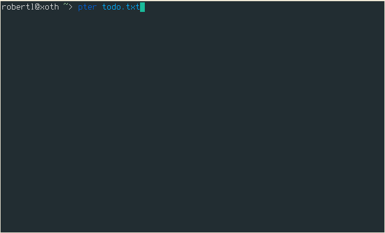

Hoy voy a mostraros esta aplicación para gestionar tu archivos todo.txt en tu terminal y con UI gráfica. Es una fantástica aplicación desarrollada en python que puedes utilizar en tu escritorio o accediendo a tu servidor vía SSH desde la terminal.
Además, su punto fuerte es la cantidad de opciones mediante extensiones no standarizadas en el todo.txt tiene.

pter tiene un montón de características que te ayudan a administrar su archivo todo.txt:
Si deseas utilizar el qpter Qt GUI, debe instalar PyQt5:
Para iniciar la GUI de Qt, puede (pero no es necesario) proporcionar la ubicación de su archivo todo.txt:
Ctrl+eCtrl+fCtrl+nCtrl+gCtrl+dCtrl+hCtrl+tCtrl+qPara utilizar pter tienes que decirle dónde está tu archivo todo.txt:
Esto te dará una lista de todas sus tareas ordenadas fecha y qué prioridad les ha dado.
Puedes navegar por las tareas con las teclas del cursor y editar las tareas seleccionadas por prensado e.
Más atajos predeterminados son:
e, editar la tarea seleccionadan, crea una nueva tarea/, Buscar:, Salta a nº de línea1...9, Introduce el nº y pulsa Enter para saltar a la línead, marque la tarea seleccionada como hecha (o vuelva a deshacer la tarea)t, iniciar o detener tiempop, mostrar todos los proyectos que coincidan con la tarea en la que estoy situadoc, mostrar todos los contextos que coincidan con la tarea en la que estoy situadol, carga una búsqueda con nombres, guarda la búsqueda actualL, carga una plantilla de tarea con nombreS, guarda una tarea como una plantilla con nombreu, abre una URL que aparece en la tarea seleccionada>, delega la tarea seleccionada?, mostrar todos los atajos de tecladoq, sal del programaHay una búsqueda compleja disponible (consulte el manual para obtener más detalles), pero la versión corta es:
/ para ingresar sus términos de búsquedadone:n para mostrar solo las tareas incompletas@contexto+projecto-@contexto not:@contextReturn para devolver el foco a la lista de tareasBusca por palabra, contexto,… Una vez realizada la búsqueda, pulsa la tecla s y escribe el nombre que quieres utilizar para la búsqueda.
Para cargar una búsqueda, utiliza la letra l
Esto creará un archivo llamado searches.txt en el directorio ~/.config/pter.
nano ~/.config/pter/searches.txt
Copiamos el ejemplo:
Realizar esta semana = done:no duebefore:mon
Realizar Hoy = done:yes completed:0
Tareas abiertas = done:noNos situamos sobre la tarea y pulsamos la tecla t. Esto agregará un tracking: atributo con el local actual fecha-hora de la tarea y cambiara la tarea a color verde.
Es fantástico, porque podemos salir del todo.txt y pter deja guardado el inicio del tiempo de tarea, de manera que sigue contando el tiempo.
También permite controlar el tiempo de varias tareas.
Cuando queramos detener el rastreo del tiempo, volveremos a pulsar la tecla t
La tarea parecerá el tiempo total desarrollado, por ejemplo spent:1m
Podemos guardar tareas repetitivas en una hoja de plantillas en ~/.config/pter/templates.txt.
La estructura es igual al searches.txt
Con la letra L, podemos cargar la tarea plantilla. Si seleccionamos none, no se cargará ninguna plantilla.
Si quieres enviar una tarea a platillas, sitúate sobre la tarea y pulsa S.
Edita
Copia
Paper revision = @paper +revision due:+7d estimate:
Bug fix = (A) @programming due:+2d estimate: git:
Project X = @work +projectx due:2021-04-11 estimate:Nos situamos sobre la tarea y pulsamos > o Ctrl+G en la versión con interfaz gráfica
Podemos hacer que una subtarea de una tarea principal, donde las subtareas no serán visibles hasta que no realicemos la tarea principal.
Para ello vamos a utilizar los identificadores únicos, que como su nombre indica, cada tarea tendrá un identificador único.
Este identificador, si fuera el nº 1, está representado con la etiqueta id:1.
A su subtarea le pondremos la etiqueta after:1. Esto quiere decir que la subtarea solo será visible en el momento que completemos la tarea con id:1.
Podemos utilizar varias subtareas enlazadas a varios identificadores.
Ejemplo: Cuando completemos la primer tarea, se mostrará la segunda y tras esta, la tercera.
Comprar patatas @tienda id:1
Hacer papas fritas @cocina id:2 after:1
Come papas fritas para cenar after:2Resumen:
after:4, significa que esta entrada solo se puede iniciar una vez que la entrada con id:4se ha completado. id:3, le permite asignar un identificador único a las entradas en todo.txt, como 3. pter aceptará cuando haya ID no únicos, pero por supuesto, identificar entradas de forma única será complicado.
Podemos crear los identificadores de forma automática, si no recuerdas el último identificador con id:#auto
También podemos agregar identificadores por grupo, por ejemplo, id:supermercado#auto y esto creará:
Tareas que se refieren a otras tareas por cualquiera de los medios existentes (p. Ej. ref: o after:) se puede encontrar buscando ref:.
Si busca utilizando varias referencias (p. Ej. ref:4,5o ref:4 ref:5) los ID de la tarea se consideran lógicos or.
Añadir directamente una nueva tarea
Para ampliar las posibilidades limitadas del todo.txt, pter también admite las siguiente etiquetas:
Las tareas se pueden ordenar pasando sort: a la búsqueda. Las propiedades de las tareas por ordenar están separadas por comas. Las siguientes propiedades pueden ser utilizado para clasificar:
due_inEl número de días hasta el vencimiento de la tarea, si hay un fecha dada.
completedSi la tarea se ha completado o no.
priorityLa prioridad de la tarea, si la hubiera.
linenrLa línea de la tarea en su archivo todo.txt
fileEl nombre del archivo todo.txt en el que se encuentra la tarea.
projectEl primer proyecto (ordenado alfabéticamente) de la tarea.
contextEl primer contexto (ordenado alfabéticamente) de la tarea.
El orden de clasificación predeterminado es completed,due_in,priority,linenr
Para personalizar atajos de teclado, colores,…. hay un archivo de configuración de ejemplo en el repositorio de GitHub.
Abriendo la aplicación con interfaz gráfica, si pulsamos la tecla F1, nos proporcionará una url con la documentación donde podremos profundizar más en la configuración.
En la versión de terminal, podemos acceder pulsando la tecla m.
También podemos encontrarla en la siguiente url del proyecto
En mi Ubuntu 20.04, la fuente en la aplicación gráfica es muy pequeña, así que he aumentado la fuente a 14 siguiendo el ejemplo del archivo de configuración:
usage: pter [-h] [-c CONFIG] [-v] [-u] [-n NEW_TASK] [filename [filename ...]]
positional arguments:
filename todo.txt file(s) to open
optional arguments:
-h, --help Mostrar ayuda
-c CONFIG, --config CONFIG
Location del archivo de configuration . Por defecto /home/angel/.config/pter/pter.conf.
-v, --version version del programa
-u, --check-for-updates
Checkear online si hay una nueva version disponible.
-n NEW_TASK, --new-task NEW_TASK
Añadir una nueva tarea.Publicado por Angel el Sunday 04 July del 2021
También te puede interesar:
Powered by org-bash-blog
Written in OrgMode with Emacs and converted to HTML with Pandoc

Este obra está bajo una licencia de Creative Commons Reconocimiento-NoComercial-CompartirIgual 4.0 Internacional.